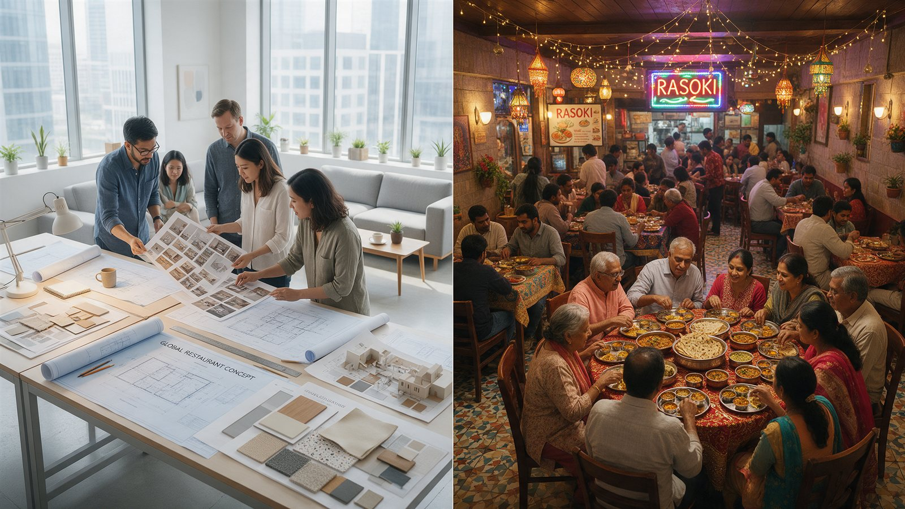

A restaurant isn’t a design project. It is a business that happens to need design.
This is something I have come to believe more strongly with every passing year.
Over the last three decades, having worked with international restaurant chains, Indian F&B brands and independent entrepreneurs, I’ve had the opportunity to see how restaurant concepts are developed, adapted, built, operated and scaled.
And one observation has stayed with me.
We spend enormous amounts of time understanding how a restaurant should look. But often not nearly enough understanding how the business is actually going to work.
This becomes particularly evident when international F&B brands enter India.
I’ve seen global design teams arrive with beautifully developed concepts, detailed design guidelines, impressive international references and a clear understanding of what the brand represents.
They spend a few days visiting existing outlets, walking through competing restaurants, observing customers, meeting local teams and studying the market.
A week later, they have a fairly good picture of what restaurants in India look like.
But do they really understand how Indians use those restaurants?
That’s where I believe the real challenge begins.

You Can Visit India in a Week. You Cannot Understand India in a Week.
I have great respect for the expertise international architects and designers bring to the table.
Many have worked across multiple markets, developed successful global formats and created experiences that have become benchmarks for the industry.
But India has a complexity that is difficult to appreciate through store visits and market presentations alone.
We often speak about the Indian consumer as though there is one.
There isn’t.
The customer in Mumbai is different from the customer in Ahmedabad. The customer in Bengaluru may have very different expectations from the customer in Lucknow or Jaipur.
But even that is an oversimplification.
Because the differences are not just between cities. They exist within cities.
A café in Bandra may attract a very different customer from one in Borivali or Powai.
A premium restaurant in a commercial district may serve a completely different occasion from a premium restaurant in an affluent residential neighbourhood.
Even when the customers have similar spending power, their reasons for visiting, their social behaviour, their expectations of service and the way they occupy the space can be very different.
Then there is the cultural fabric of India.
Language, regional identity, food habits, family structures, religious and cultural practices, celebrations and local aspirations all influence how people interact with hospitality spaces.
And these influences don’t disappear simply because the customer is affluent, internationally travelled or familiar with global brands.
This is why I have always felt that understanding a market requires more than understanding its demographics.
You need to understand its behaviour.
And behaviour is not always visible in a drawing, a photograph or a market research report.
The Indian Customer Is Changing, But Not Necessarily Becoming Western.
One of the more interesting changes I’ve observed is the evolution of the younger Indian consumer.
Today’s customers have access to global experiences in a way earlier generations didn’t.
They travel more, discover restaurants through social media, follow international food trends and are increasingly comfortable experimenting with different formats.
But I think we sometimes make a mistake in interpreting this exposure.
We assume that because the Indian customer is becoming more global in outlook, their behaviour must also be becoming identical to that of customers in international markets.
I don’t believe that is necessarily true.
An Indian customer may appreciate the simplicity of a Scandinavian café, the energy of a New York restaurant or the sophistication of a London bar.
But their expectations of seating, service, food, hospitality, privacy and social interaction may still be rooted in their own cultural context.
Think about how we dine.
A restaurant may need to accommodate couples, groups of friends, extended families and celebrations, sometimes within the same evening.
A group may want to share multiple dishes rather than order individually.
Some customers may want to sit for hours, while others want a quick meal.
The importance of vegetarian food, the way orders are placed, how food is shared and how families with children use a restaurant can all influence its design.
Even the idea of premium dining has changed.
For one customer, premium means exclusivity and privacy.
For another, it means energy, social visibility and a place worth celebrating.
For someone else, it may simply mean exceptional food and warm, attentive service in a comfortable environment.
These differences matter.
They influence the table mix, circulation, acoustics, lighting, service stations, kitchen planning and the relationship between different parts of the restaurant.
These are not merely interior design decisions. They are business decisions expressed through design.
The Problem With Copying a Successful International Format
When a global restaurant brand enters India, it understandably wants to retain the elements that made it successful elsewhere.
Its identity. Its brand language. Its customer experience. Its operating principles. Its design standards.
And rightly so.
A successful international brand should not lose its identity every time it enters a new country.
But there is a difference between preserving brand DNA and reproducing a physical format without questioning its relevance.
A restaurant layout that works well in London may not necessarily work in Mumbai.
A café designed around individual customers and quick visits may need a different seating strategy in a location where groups tend to stay longer.
A QSR format may need to rethink its ordering, pickup and kitchen arrangements depending on delivery volumes, menu complexity and local customer behaviour.
A premium dining format may need greater flexibility in its seating configurations or a different approach to the customer journey.
And these differences are not always immediately obvious.
Sometimes the international concept looks perfectly suitable on paper.
The finishes are appropriate. The branding is consistent. The furniture is attractive. The design appears complete.
But the questions that really matter haven’t been answered.
- Will the seating mix suit the actual customer?
- Will the kitchen support the local menu and expected volumes?
- Does the counter arrangement reflect how customers will order and collect food?
- Can the staff operate efficiently during peak hours?
- Does the design work commercially within the available footprint and investment?
- Can the format be repeated across multiple locations without losing consistency or becoming unnecessarily expensive?
And perhaps most importantly, will the restaurant remain relevant as the customer and the brand evolve?
This is where I believe the role of a specialist F&B design partner becomes critical.
Not simply to localise the drawings. But to challenge the assumptions behind them.
Localisation Is Not Adding an Indian Touch to a Global Design.
I’ve often found the word localisation to be misunderstood.
It can become an exercise in changing colours, introducing local materials, adding cultural references or modifying a few visual elements.
There is nothing wrong with those interventions when they are appropriate.
But that is only one small part of localisation.
For me, real localisation begins much earlier.
It begins with understanding why the customer would choose that brand in the first place.
What does the brand mean to them? What are they comparing it with? What are their aspirations? How does the brand fit into their lifestyle? And how does that change from one location to another?
This is particularly important for international premium brands.
An internationally successful design may communicate premium positioning beautifully in its home market.
But the same visual language may not create the same emotional response in India.
That doesn’t necessarily mean the design needs to become more elaborate or more Indian.
It means we must understand what the target customer values before deciding how that value should be expressed.
Sometimes the right decision is to retain almost everything.
Sometimes it is to change the customer journey, the seating strategy or the relationship between the kitchen and dining area.
And sometimes the most valuable contribution is telling the brand that an element of its international format may not work as intended in a particular Indian market.
The objective is not to make a global brand look local. It is to make the brand locally relevant while remaining globally recognisable.
That balance requires judgement.
But Being an Indian Designer Doesn’t Automatically Mean You Understand India Either.
I think this is equally important to acknowledge.
It would be easy to argue that Indian designers understand Indian customers better simply because they live here.
But I don’t believe nationality gives anyone an automatic advantage.
An Indian designer working primarily in Mumbai may have limited understanding of how customers behave in a particular market in Kochi, Indore or Guwahati.
And a designer who creates beautiful homes, offices or luxury retail spaces may not necessarily understand the operational and commercial demands of an F&B business.
Restaurant design is a specialisation.
It requires knowledge of the menu, kitchen, equipment, services, customer flow, staff movement, operational efficiencies, capital investment, maintenance and the economics of the format.
An attractive restaurant that cannot handle peak hour service has a problem.
A beautifully designed kitchen that creates unnecessary movement for staff has a problem.
A premium interior that consumes too much capital without contributing meaningfully to the customer experience may also have a problem.
And a concept that works at its first location but becomes difficult to reproduce across 20 outlets has a scalability problem.
These are not failures of aesthetics. They are failures to understand the business.
This is why I believe Indian designers also need to raise the bar.
We cannot expect international brands to value local expertise simply because we understand the geography or can execute projects at lower costs.
We need to bring genuine insight, operational understanding, research, strong design thinking and the confidence to challenge a brief when necessary.
Local knowledge is valuable only when it translates into better decisions.
What Years of Working With F&B Brands Have Taught Me
Having worked with brands such as Pizza Hut, KFC, Domino’s and several Indian restaurant businesses over the years, one of the most important lessons I’ve learned is that the design brief is only the starting point.
The real work begins when we understand the business behind it.
When we approach a new format or a brand refresh at SprintCo, we don’t want to begin by simply discussing the look and feel.
We want to understand what the brand is trying to achieve.
- Who is the customer today? Who does the brand want its customer to become?
- What is the menu telling us about the kitchen, service and dining experience?
- Who are the competitors, and why are customers choosing them?
- What does the existing brand stand for, and which elements have earned customer loyalty?
- What is changing in the market? What are the operational challenges? What is the investment model?
- How quickly does the brand want to grow?
- And what must be designed today so that the concept remains relevant tomorrow?
These conversations often lead us in directions that are very different from where the original design brief began.
A request to modernise an interior may actually reveal a need to rethink the customer journey.
A request to increase seating may lead to a deeper discussion about table mix, circulation and service efficiency.
A brief for a more premium experience may require understanding the target customer’s expectations rather than simply specifying more expensive finishes.
A rollout brief may reveal that the real challenge is not creating another attractive outlet, but developing a design system that can be adapted, engineered, built and maintained consistently across multiple locations.
This is where the experience of working across thousands of F&B projects becomes valuable.
Not because we have seen every possible situation. We haven’t.
But because experience helps us recognise patterns, question assumptions and identify potential problems before they become expensive decisions.
And even after decades in this industry, every new format and every new market has something to teach us.
A Restaurant Is an Interconnected Business System.
Over time, my understanding of restaurant design has changed.
I no longer see the dining room, kitchen, engineering, construction and operations as separate disciplines that come together at different stages of a project.
They are interconnected.
A decision about the menu can affect kitchen equipment, ventilation, power requirements, storage and staffing.
A decision about the seating layout can affect service movement, customer comfort, capacity and revenue potential.
A decision about materials can affect capital cost, maintenance, durability and the ease of future rollouts.
A decision about the brand experience can influence how customers move through the space, how long they stay and whether they want to return.
And a decision made at the design stage can influence construction complexity, project timelines and the brand’s ability to scale.
This is why I strongly believe that a successful F&B space is not created by design alone.
It comes from understanding the brand, customer, operations, economics, engineering, construction and future growth as one interconnected system.
If these elements are considered independently, the final design may look complete while the business continues to struggle with problems that could have been addressed much earlier.
The challenge is to bring them together before decisions become difficult or expensive to change.
For me, this is what meaningful restaurant design is about.
Not simply creating an environment that photographs well.
But creating a space that makes sense for the customer, supports the people operating it, respects the investment and gives the brand a foundation to grow.
The Best Future for Global Brands in India Is Collaboration, Not Competition.
I don’t believe this is a debate about whether international or Indian designers are better.
Some of the most interesting possibilities emerge when international design expertise and strong local F&B knowledge work together.
Global teams can bring valuable experience, new perspectives, established brand systems and design innovation.
Local specialists can contribute a deeper understanding of market behaviour, operations, engineering, execution and the realities of scaling across India.
But that collaboration needs to begin early.
If the local partner is brought in only after the design has been finalised, the opportunity to influence the decisions that matter most may already have passed.
Local expertise should not be reduced to checking drawings, adapting specifications or coordinating contractors.
It should be part of the conversation when the concept is being developed.
Equally, the local team must bring enough expertise and conviction to contribute meaningfully rather than simply agree with the international design direction.
The best outcomes come when both sides are willing to listen, question and adapt.
Because the objective is not to prove whose design philosophy is superior. It is to create a restaurant that works.
Design Is Not the Business. The Business Needs Design.
This is perhaps the biggest shift in thinking I would like to see across our industry.
We often celebrate restaurants for their interiors. Their materials. Their lighting. Their design awards. Their Instagram appeal.
And good design deserves recognition.
But the restaurant owner is investing in a business.
One that must attract customers, deliver a consistent experience, operate efficiently, manage costs, remain relevant and hopefully grow.
Design has an enormous role to play in that success.
But it cannot be treated as an isolated creative exercise.
It must be informed by the realities of the business it is meant to support.
And whether the designer is sitting in Mumbai, London, Milan or New York, that responsibility remains the same.
Understand the brand.
Understand the customer.
Understand the market.
Understand the operations.
Understand the economics.
Understand how the restaurant will be built.
And understand where the business wants to go.
Then design.
Because a restaurant isn’t a design project.
It is a business that happens to need design.
And perhaps the real measure of a successful restaurant designer is not simply how beautifully they can interpret a brand.
It is how deeply they understand the business they have been entrusted to design.